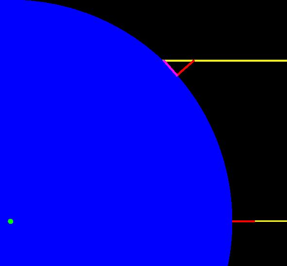
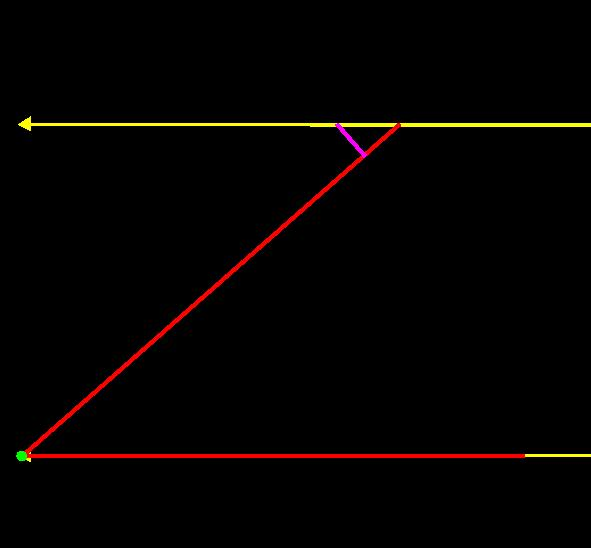

Eratosthenes
簡述
這個模擬器模擬了兩日規在地表上不同位置所造成的影子，其中一個受到陽光直射(沒有影子)，也就是當此日規位於赤道而時值夏至當天的情況。
另一個日規在前述日規的北方(提醒:日規的大小未符合實際比例!)
我們可以從這個模擬過程了解到Eratosthenes是如何僅由日規投射出的影子來算出地球直徑。(當天陽光直射南方那只日規，所以它沒有影子)
兩日規沿地表的距離是可調的，影長已知。我們可以由這個影子來判斷兩日規間的角度。模擬中，如果希望看到更清楚的幾何關係，可以把地球隱去!
Eratosthenes 如何測量地球
- 顯示選擇清單
- 顯示地球: 顯示代表地球的圓盤 (取消選取此選項取得更佳的幾何視野)
- 顯示影子長度: 在底部以視窗顯示影子長度
- 顯示兩日規所夾角度: 在底部以視窗顯示兩日規所夾角度(對於那些較不熟悉計算此角度所需用到的三角函數的學生(特別是反正切)，這有助於他們理解)
- 顯示太陽光線
- 顯示代表地心的圓點
- 圖示說明
- 藍色圓盤:地球
- 紅線:日規，如果選擇把地球隱去，就可以看到兩條紅線的延伸通過地心
- 黃線:太陽光線，兩道光互相平行(嚴謹地說，這兩條線並不會完全平行彼此，但因為太陽與地球的距離足足有一天文單位，故在此視為平行無妨)
- 粉紅線段: 兩日規所造成的影子 (固定的那只日規並不沒有影子，因為假設太陽光平行此日規).
- 綠點:地心
- 其他說明
- 距離(公里):兩日規間沿地表的距離
- 可動日規的影長為已知(單位同日規本身的長度單位)
- 兩日規所夾角度(度)
Todd K. Timberlake (ttimberlake@berry.edu)